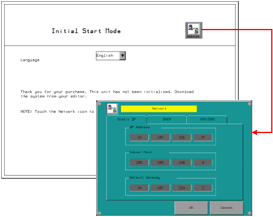
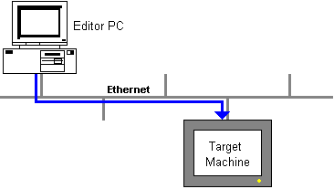

|
|
|
|
|
|
|
|
The Runtime Installer can install or upgrade Vijeo Designer Runtime on the XBTGT, XBTGC, XBTGK, HMIGK, HMIGTO, HMIGTU, HMIGTUX, and HMISTU target machines.
The Runtime Installer supports three installation methods:
For a list of the installation methods supported by the different target machines, see Appendix 5, Hardware Specifications.

You can also download to CF Card/SD Card to upgrade Vijeo-Designer Runtime. From the Vijeo-Designer editor, when you download to a CF Card/SD Card, both the runtime system files and user application are downloaded. You can then start up the target using the CF Card/SD Card and avoid using the Runtime Installer application. See Section 25.6.4, Downloading to a CF Card/SD Card Reader or USB Drive.
When you install Vijeo-Designer Runtime using Ethernet, first set the IP address on the target machine.
This section describes how to set up the IP address when you use the target machine for the first time.
If a version of Vijeo-Designer Runtime is already installed, change the IP address in the configuration menu by touching the top-left corner within 10 seconds of powering up. For information about the configuration menu, see Section 26.3.1, Setting Up the Network.
Power up the target machine.
In the Introduction screen, touch the Network button to display the configuration menu's Network settings.

Enter the IP Address, Subnet Mask, and Default Gateway addresses.
Touch OK to return to the Introduction screen.

Assign a unique IP Address to each target machine. When you connect the target machine to the network and it detects a duplicate IP address, an error message displays and the target machine disconnects from the network.
Checking for duplicate IP addresses also occurs when:
A new network device is connected
A disconnected network device is reconnected
A network device's IP address is reconfigured at runtime
The target’s network address can be an IP Address or a host name. The Runtime Installer contacts your network's DNS server to validate the IP address or the host name. Therefore, setup your DNS server setup with the target's IP address or the target's host name before you begin installing the Runtime. Contact your network administrator for information about your DNS server.
Using an Ethernet cable, connect the target machine to the editor PC.

On the Vijeo-Designer editor PC, click the Windows Start button, then point to Programs, Schneider Electric, Vijeo-Designer, Tools, and click Runtime Installer.
In the Vijeo-Designer Runtime Installer dialog box, select the series number of your target machine. Set Download to Ethernet, and define the target machine's network settings.

Do not select Recovery unless you have a specific need for this feature.
Recovery forcibly installs the runtime system files and deletes all the data on the target machine. Use Recovery when the target machine becomes inoperable. See Section 25.6.6, Recovering the System on a Target Machine.
Click Send to start the installation of Vijeo-Designer Runtime.
When runtime installation is complete, a confirmation message displays.
Click OK to close the message box, then click Exit to close the Vijeo-Designer Runtime Installer dialog box.
The Vijeo Designer Runtime can be downloaded to a target machine through a router. The following procedure assumes that your PC and target machine are already connected to the network and the router has been set up with the correct port forwarding rules. For more information on port forwarding and an example of downloading through a router, see Section 25.6.1.2, Downloading through a Router.
On the Vijeo-Designer editor PC, click the Windows Start button, then point to Programs, Schneider Electric, Vijeo-Designer, Tools, and click Runtime Installer.
In the Vijeo-Designer Runtime Installer dialog box, select the series number of your target machine. Set Download to Ethernet, and define the following:
IP Address: Target Machine's IP Address or Host Name
Connect Via: Define the Router's Public IP address or Host Name
Control Port: Define the port configured on the router that forwards to Target Machine Port 6001
Data Port: Define the port configured on the router that forwards to Target Machine Port 13777

Do not select Recovery unless you have a specific need for this feature.
Recovery forcibly installs the runtime system files and deletes all the data on the target machine. Use Recovery when the target machine becomes inoperable. See Section 25.6.6, Recovering the System on a Target Machine.
Click Send to install Vijeo Designer Runtime.
To install Vijeo-Designer Runtime over the USB port, you need to use the USB cable XBTZG935 created specifically for USB downloads. The USB cable requires a special USB driver that is installed on your PC during the Vijeo Designer installation. Use the USB cable BMXXCAUSBH018 to download to the HMISTU, HMIGK or HMIGTO over the mini-B USB port.

You can connect the USB cable through a hub and into the target machine's USB port. When connecting through an USB hub, connect only one USB download cable and one target machine to the hub. Vijeo-Designer Runtime allows more than one USB component to be connected and working correctly as long as the USB components are not in the same class driver.
Connect the USB cable to the target machine and to the editor PC.


Use the mini-B USB port on the HMISTU, HMIGK and HMIGTO for installing Vijeo Designer Runtime or downloading a project only.
On the Vijeo-Designer editor PC, click the Windows Start button, then point to Programs, Schneider Electric, Vijeo-Designer, Tools, and click Runtime Installer.
In the Vijeo-Designer Runtime Installer dialog box, select the series number of your target machine. Set Download to USB.

Do not select Recovery unless you have a specific need for these features.
Recovery forcibly installs the runtime system files. Use Recovery when the target machine becomes inoperable. See Section 25.6.6, Recovering the System on a Target Machine.
Click Send to start the installation of Vijeo-Designer Runtime. When runtime installation is complete, a message box displays.
Click OK to close the message box, then click Exit to close the Vijeo-Designer Runtime Installer dialog box.